Candidate List 20251127Previous Day Next Day
Section 1: New Sources (age<1d) Section 2: Old (1-5d) sources observed last nightplaceholder
Section 1: New Afterglow/FBOT Cands Last Night (0)
Section 2: Older Sources Observed Last Night (5)
0. ZTF25acelvvz (Afterglow?) [Back to Top] [Share] [Trigger Swift] [Fritz] [Lasair]RA, Dec: 105.45516, 36.339 7h 1m49.24s, 36d20m20.38sGalactic (l, b): 180.52883, 17.61777 ext(g-r) = 0.085 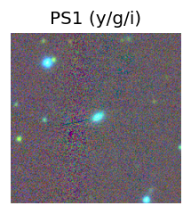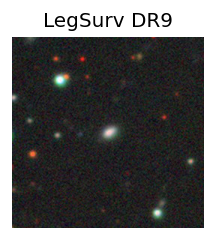
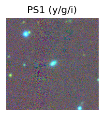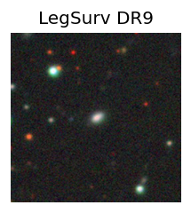
TESS: Sectors [20 47 60]
PS1: 0 sources in 3 arcsec
LegacySurvey: 1 sources in 3 arcsec Closest: d = 0.52 arcsec, 249.5 deg (east of north) photoz=0.12 (68% bounds 0.09, 0.14), type=SER peak abs mag = -19.0 (68% bounds -18.42, -19.34)
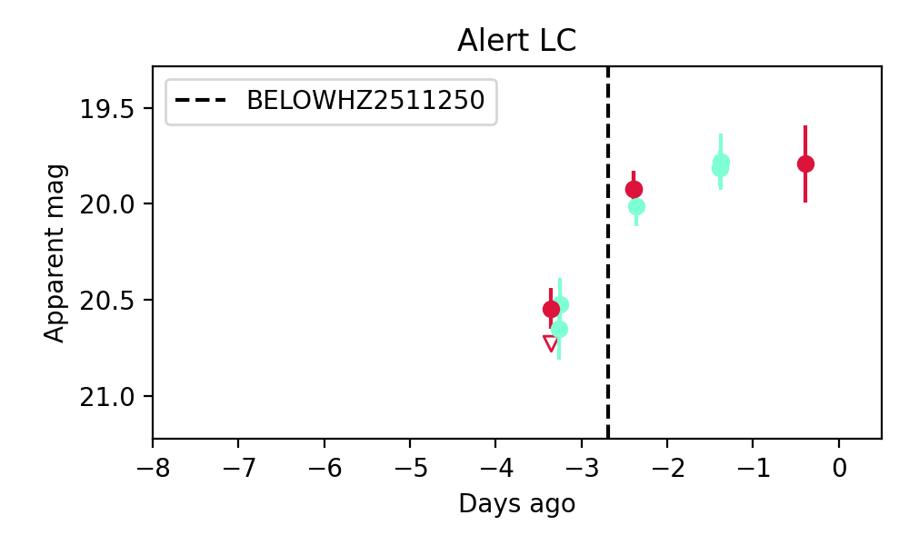
Extinction-corrected gr color:
From alerts: 0.0 +/- 0.12 mag
Consistent with synchrotron, g-r>0!
Rise Rate:
g: 0.39 mag/day
r: 0.83 mag/day
i: -99 mag/day
Fade Rate:
g: -99 mag/day
r: -99 mag/day
i: -99 mag/day
1. ZTF25acemscy (Afterglow?) [Back to Top] [Share] [Trigger Swift] [Fritz] [Lasair]RA, Dec: 10.16766, 41.37887 0h40m40.24s, 41d22m43.94sGalactic (l, b): 120.76211, -21.44751 ext(g-r) = 0.086 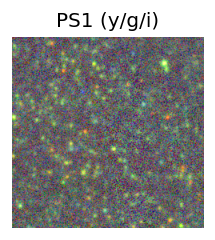
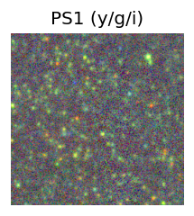
TESS: Sectors [17 57 84]
PS1: 1 source in 3 arcsec Closest: d = 5.23 arcsec photoz=0.55+/-0.05 peak abs mag = -25.24
LegacySurvey: 0 sources in 3 arcsec
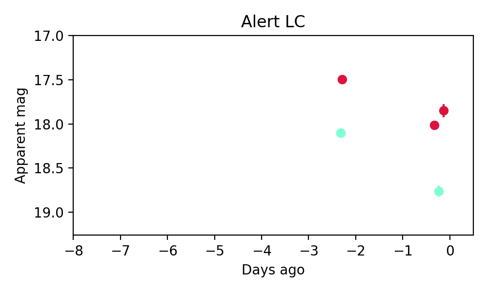
Extinction-corrected gr color:
From alerts: 0.69 +/- 0.07 mag
Consistent with synchrotron, g-r>0!
Rise Rate:
g: 0.2 mag/day
r: 0.24 mag/day
i: -99 mag/day
Fade Rate:
g: 0.32 mag/day
r: 0.25 mag/day
i: -99 mag/day
2. ZTF25acemwwf (Afterglow?) [Back to Top] [Share] [Trigger Swift] [Fritz] [Lasair]RA, Dec: 29.32575, 27.1957 1h57m18.18s, 27d11m44.52sGalactic (l, b): 140.51273, -33.41749 ext(g-r) = 0.076


TESS: Sectors [17 85]
PS1: 0 sources in 3 arcsec
LegacySurvey: 1 sources in 3 arcsec Closest: d = 0.03 arcsec, 197.4 deg (east of north) photoz=0.56 (68% bounds 0.19, 1.08), type=PSF peak abs mag = -25.06 (68% bounds -22.39, -26.82)
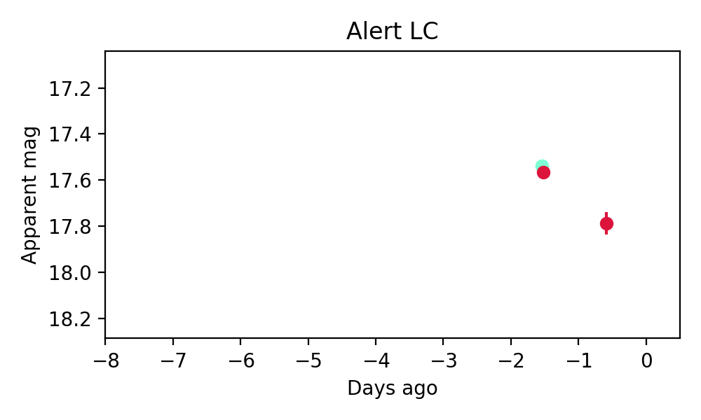
Extinction-corrected gr color:
From alerts: -0.27 +/- 0.03 mag
Rise Rate:
g: 0.24 mag/day
r: 0.22 mag/day
i: -99 mag/day
Fade Rate:
g: 0.13 mag/day
r: 0.22 mag/day
i: -99 mag/day
3. ZTF25acepuxi (Afterglow?) [Back to Top] [Share] [Trigger Swift] [Fritz] [Lasair]RA, Dec: 158.5397, 60.03339 10h34m9.53s, 60d 2m0.19sGalactic (l, b): 148.71878, 49.65655 ext(g-r) = 0.01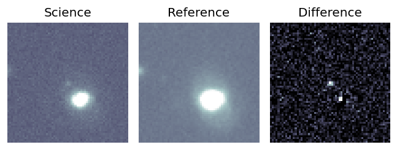 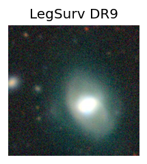
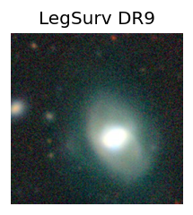
TESS: Sectors [21 48 75]
PS1: 0 sources in 3 arcsec
LegacySurvey: 0 sources in 3 arcsec
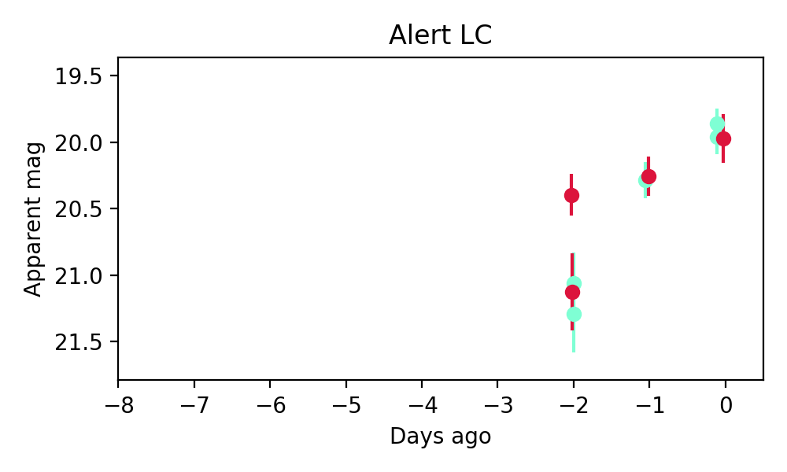
Extinction-corrected gr color:
From alerts: -0.07 +/- 0.21 mag
Consistent with synchrotron, g-r>0!
Rise Rate:
g: 0.59 mag/day
r: 0.39 mag/day
i: -99 mag/day
Fade Rate:
g: -99 mag/day
r: -99 mag/day
i: -99 mag/day
4. ZTF25acerwiy (FBOT?) [Back to Top] [Share] [Trigger Swift] [Fritz] [Lasair]RA, Dec: 359.40875, -21.71883 23h57m38.10s, -21d-43m-7.80sGalactic (l, b): 53.86275, -76.62264 ext(g-r) = 0.019


TESS: Sectors [ 2 29 96 107]
PS1: 1 source in 3 arcsec Closest: d = 0.75 arcsec photoz=0.12+/-0.03 peak abs mag = -19.76
LegacySurvey: 0 sources in 3 arcsec
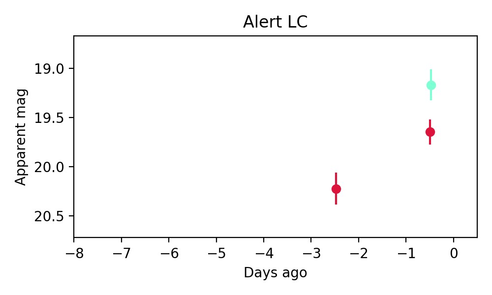
Extinction-corrected gr color:
From alerts: -0.45 +/- 0.15 mag
Rise Rate:
g: 0.07 mag/day
r: 0.28 mag/day
i: -99 mag/day
Fade Rate:
g: -99 mag/day
r: -99 mag/day
i: -99 mag/day